Last updated: 2020-07-05
Checks: 7 0
Knit directory: duplex_sequencing_screen/
This reproducible R Markdown analysis was created with workflowr (version 1.6.2). The Checks tab describes the reproducibility checks that were applied when the results were created. The Past versions tab lists the development history.
Great! Since the R Markdown file has been committed to the Git repository, you know the exact version of the code that produced these results.
Great job! The global environment was empty. Objects defined in the global environment can affect the analysis in your R Markdown file in unknown ways. For reproduciblity it’s best to always run the code in an empty environment.
The command set.seed(20200402) was run prior to running the code in the R Markdown file. Setting a seed ensures that any results that rely on randomness, e.g. subsampling or permutations, are reproducible.
Great job! Recording the operating system, R version, and package versions is critical for reproducibility.
Nice! There were no cached chunks for this analysis, so you can be confident that you successfully produced the results during this run.
Great job! Using relative paths to the files within your workflowr project makes it easier to run your code on other machines.
Great! You are using Git for version control. Tracking code development and connecting the code version to the results is critical for reproducibility.
The results in this page were generated with repository version 8cd26db. See the Past versions tab to see a history of the changes made to the R Markdown and HTML files.
Note that you need to be careful to ensure that all relevant files for the analysis have been committed to Git prior to generating the results (you can use wflow_publish or wflow_git_commit). workflowr only checks the R Markdown file, but you know if there are other scripts or data files that it depends on. Below is the status of the Git repository when the results were generated:
Ignored files:
Ignored: .Rhistory
Ignored: .Rproj.user/
Untracked files:
Untracked: analysis/bcrabl_hill_ic50s.csv
Untracked: analysis/column_definitions_for_twinstrand_data_06062020.csv
Untracked: analysis/dose_response_curve_fitting_with_errorbars.Rmd
Untracked: analysis/dosing_normalization_standard_deviations.pdf
Untracked: analysis/multinomial_sims.Rmd
Untracked: analysis/pooled_growth_fig_corrected_070320.pdf
Untracked: analysis/r1r2_1in3000.pdf
Untracked: analysis/r1r2_1in5000.pdf
Untracked: analysis/r1r3_1in3000.pdf
Untracked: analysis/simple_data_generation.Rmd
Untracked: analysis/twinstrand_growthrates_simple.csv
Untracked: analysis/twinstrand_maf_merge_simple.csv
Untracked: analysis/wildtype_growthrates_sequenced.csv
Untracked: code/microvariation.normalizer.R
Untracked: data/Combined_data_frame_IC_Mutprob_abundance.csv
Untracked: data/IC50HeatMap.csv
Untracked: data/Twinstrand/
Untracked: data/gfpenrichmentdata.csv
Untracked: data/heatmap_concat_data.csv
Untracked: figures_archive/
Untracked: output/archive/
Untracked: output/bmes_abstract_51220.pdf
Untracked: output/clinicalabundancepredictions_BMES_abstract_51320.pdf
Untracked: output/clinicalabundancepredictions_BMES_abstract_52020.pdf
Untracked: output/enrichment_simulations_3mutants_52020.pdf
Untracked: output/grant_fig.pdf
Untracked: output/grant_fig_v2.pdf
Untracked: output/grant_fig_v2updated.pdf
Untracked: output/ic50data_all_conc.csv
Untracked: output/ic50data_all_confidence_intervals_individual_logistic_fits.csv
Untracked: output/ic50data_all_confidence_intervals_raw_data.csv
Untracked: output/twinstrand_microvariations_normalized.csv
Untracked: shinyapp/
Unstaged changes:
Modified: analysis/4_7_20_update.Rmd
Modified: analysis/E255K_alphas_figure.Rmd
Modified: analysis/clinical_abundance_predictions.Rmd
Modified: analysis/dose_response_curve_fitting.Rmd
Modified: analysis/misc.Rmd
Modified: analysis/nonlinear_growth_analysis.Rmd
Modified: analysis/spikeins_depthofcoverages.Rmd
Modified: analysis/twinstrand_spikeins_data_generation.Rmd
Deleted: data/README.md
Modified: output/twinstrand_maf_merge.csv
Modified: output/twinstrand_simple_melt_merge.csv
Note that any generated files, e.g. HTML, png, CSS, etc., are not included in this status report because it is ok for generated content to have uncommitted changes.
These are the previous versions of the repository in which changes were made to the R Markdown (analysis/dosing_normalization.Rmd) and HTML (docs/dosing_normalization.html) files. If you’ve configured a remote Git repository (see ?wflow_git_remote), click on the hyperlinks in the table below to view the files as they were in that past version.
| File | Version | Author | Date | Message |
|---|---|---|---|---|
| Rmd | 8cd26db | haiderinam | 2020-07-05 | wflow_publish(“analysis/dosing_normalization.Rmd”) |
| html | bf79d80 | haiderinam | 2020-06-30 | Build site. |
| Rmd | 8671d1b | haiderinam | 2020-06-30 | Fixed figure images and html headings |
| html | 7d36b61 | haiderinam | 2020-06-30 | Build site. |
| html | da11e69 | haiderinam | 2020-06-30 | Build site. |
| Rmd | 278a039 | haiderinam | 2020-06-30 | added an MCMC method for normalization. Converted normalization into a |
| html | 3e2a9ab | haiderinam | 2020-06-02 | Build site. |
| html | 32f999a | haiderinam | 2020-06-02 | Build site. |
| Rmd | d6a6fd2 | haiderinam | 2020-06-02 | wflow_publish(“analysis/dosing_normalization.Rmd”) |
This is a strategy that uses the observed GFP growth rates to estimate the approximate experimental dose and then normalizes all mutants to behave at that theoretical dose given an arbitrary hill coefficient in a dose response curve.
#Looking at data that is off.
#First, I will look at data from IC50 predictions and make a correlation plot of netgr of mutants expected at 625nM vs 1.25uM.
#Next, I will look at whether any of our replicates seemed off
a=ic50data_long%>%filter(conc%in%c(.6,1.2))
a_cast=dcast(a,mutant~conc)Using netgr_pred as value column: use value.var to override.# library(reshape2)
ic50data_cast=dcast(ic50data_long,mutant~conc)Using netgr_pred as value column: use value.var to override.ic50data_cast6=ic50data_cast%>%dplyr::select(mutant,`0.9`)
a=ic50data_long%>%filter(conc==0.9)
# ic50data_long$`0.6`=ic50data_long%>%filter(conc==0.6)%>%dplyr::select(netgr_pred)
a=merge(ic50data_cast6,ic50data_long,by="mutant")
# ic50data_long$`0.6`=ic50data_cast$`0.6`
# ic50data_long=ic50data_long%>%mutate(`0.6`=ic50data_cast$`0.6`)
a=a%>%filter(conc%in%c(.4,.6,.8,1,1.2,1.4))
getPalette = colorRampPalette(brewer.pal(6, "Spectral"))
plotly=ggplot(a,aes(x=`0.9`,y=netgr_pred))+
geom_abline()+
geom_point(color="black",shape=21,size=3,aes(fill=factor(conc)))+
scale_fill_manual(values = getPalette(length(unique(a$conc))))+
cleanup
ggplotly(plotly)########Making figure with predicted growth over various concentrations
ic50data_cast=dcast(ic50data_long,mutant~conc)Using netgr_pred as value column: use value.var to override.ic50data_cast6=ic50data_cast%>%dplyr::select(mutant,`0.8`)
a=merge(ic50data_cast6,ic50data_long,by="mutant")
a=a%>%filter(conc%in%c(.4,.8,1.2))
####Sorting mutants from more to less resistant
ic50data_long_625=a%>%filter(conc==.8)
a$mutant=factor(a$mutant,levels = as.character(ic50data_long_625$mutant[order((ic50data_long_625$y),decreasing = T)]))
###
getPalette = colorRampPalette(brewer.pal(3, "Spectral"))
ggplot(a,aes(x=`0.8`,y=netgr_pred))+
geom_abline()+
geom_point(color="black",shape=21,size=4,aes(fill=factor(conc)))+
scale_x_continuous(limits=c(-.01,.06),name="Theoretical Growth rate")+
scale_y_continuous(limits=c(-.01,.06),name="Theoretical Growth rate with 50% error in dose")+
scale_fill_manual(values = getPalette(length(unique(a$conc))))+
cleanup+
theme(legend.position = "none")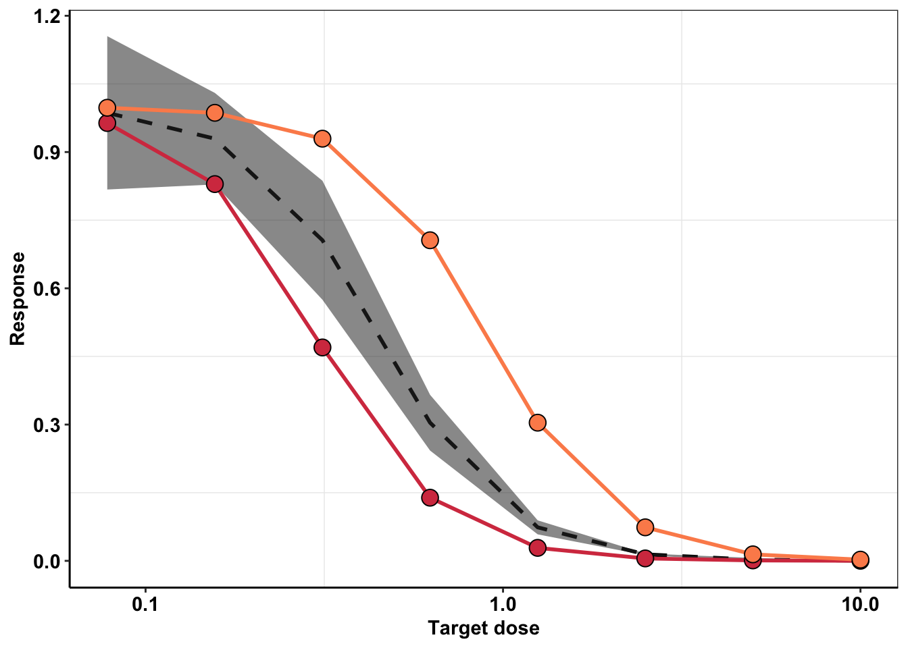
# ggsave("dosing_error_r1r2.pdf",width=3,height=3,units="in",useDingbats=F)
ggplot(a,aes(x=mutant,y=netgr_pred,color=factor(conc)))+
geom_abline()+
geom_point(color="black",shape=21,size=4,aes(fill=factor(conc)))+
# scale_x_continuous(limits=c(1.33/72,1.405/72),name="Theoretical Growth rate \nat intended concentration")+
scale_y_continuous(limits=c(-.01,.06),name="Theoretical Growth rate")+
scale_fill_manual(values = getPalette(length(unique(a$conc))))+
cleanup+
theme(legend.position = "none",
axis.title.x = element_blank(),
axis.text.x=element_text(angle=90,hjust=.5,vjust=.5))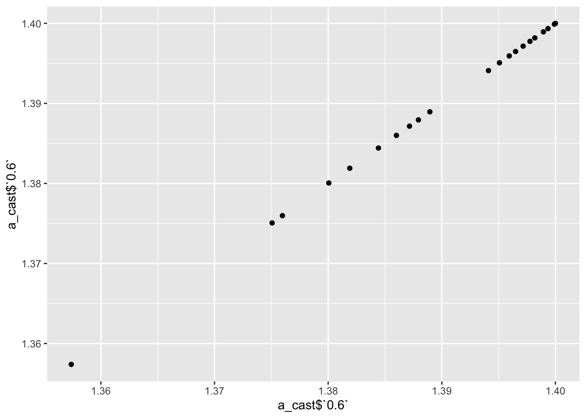
# ggsave("dosing_error_r1mutant.pdf",width=5,height=3,units="in",useDingbats=F)We’ll need to assume a hill coefficient if we want to normalize the dose response of these mutants. Below, you will see that the typical hill coefficient in our dataset is centered around 2-3. Therefore, it is safe to assume that the hill coefficient for all the mutants is around the one forthe standard (E255K)
ic50data=read.csv("data/heatmap_concat_data.csv",header = T,stringsAsFactors = F)
# ic50data=read.csv("../data/heatmap_concat_data.csv",header = T,stringsAsFactors = F)
ic50data=ic50data[c(1:10),]
ic50data_long=melt(ic50data,id.vars = "conc",variable.name = "species",value.name = "y")
#Removing useless mutants (for example keeping only maxipreps and removing low growth rate mutants)
ic50data_long=ic50data_long%>%filter(species%in%c("Wt","V299L_H","E355A","D276G_maxi","H396R","F317L","F359I","E459K","G250E","F359C","F359V","M351T","L248V","E355G_maxi","Q252H_maxi","Y253F","F486S_maxi","H396P_maxi","E255K","Y253H","T315I","E255V"))
#Making standardized names
ic50data_long$mutant=ic50data_long$species
ic50data_long=ic50data_long%>%
# filter(conc=="0.625")%>%
# filter(conc=="1.25")%>%
mutate(mutant=case_when(species=="F486S_maxi"~"F486S",
species=="H396P_maxi"~"H396P",
species=="Q252H_maxi"~"Q252H",
species=="E355G_maxi"~"E355G",
species=="D276G_maxi"~"D276G",
species=="V299L_H" ~ "V299L",
species==mutant ~as.character(mutant)))
# ic50data_long_625$species[order((ic50data_long_625$y),decreasing = T)]
#In the next step, I'm ordering mutants by decreasing resposne to the 625nM dose. Then I use this to change the levels of the species factor from more to less resistant. This helps with ggplot because now I can color the mutants with decreasing resistance
ic50data_long_625=ic50data_long%>%filter(conc==.625)
ic50data_long$species=factor(ic50data_long$species,levels = as.character(ic50data_long_625$species[order((ic50data_long_625$y),decreasing = T)]))
ic50data_long$mutant=factor(ic50data_long$mutant,levels = as.character(ic50data_long_625$mutant[order((ic50data_long_625$y),decreasing = T)]))
########Four parameter logistic########
#Reference: https://journals.plos.org/plosone/article/file?type=supplementary&id=info:doi/10.1371/journal.pone.0146021.s001
#In short: For each dose in each species, get the response
# rm(list=ls())
ic50data_long_model=data.frame()
# hill_coefficients=data.frame()
hill_coefficients_cum=data.frame()
ic50data_long$species=ic50data_long$mutant
for (species_curr in sort(unique(ic50data_long$species))){
ic50data_species_specific=ic50data_long%>%filter(species==species_curr)
x=ic50data_species_specific$conc
y=ic50data_species_specific$y
#Next: Appproximating Response from dose (inverse of the prediction)
ic50.ll4=drm(y~conc,data=ic50data_long%>%filter(species==species_curr),fct=LL.3(fixed=c(NA,1,NA)))
b=coef(ic50.ll4)[1]
c=0
d=1
e=coef(ic50.ll4)[2]
###Getting predictions
ic50data_species_specific=ic50data_species_specific%>%group_by(conc)%>%mutate(y_model=c+((d-c)/(1+exp(b*(log(conc)-log(e))))))
ic50data_species_specific=data.frame(ic50data_species_specific) #idk why I have to end up doing this
ic50data_long_model=rbind(ic50data_long_model,ic50data_species_specific)
hill_coefficients_curr=data.frame(cbind(species_curr,b,e))
# hill_coefficients$species=species_curr
# hill_coefficients$hill=b
hill_coefficients_cum=rbind(hill_coefficients_cum,hill_coefficients_curr)
}
ic50data_long=ic50data_long_model
#In the next step, I'm ordering mutants by decreasing resposne to the 625nM dose. Then I use this to change the levels of the species factor from more to less resistant. This helps with ggplot because now I can color the mutants with decreasing resistance
ic50data_long_625=ic50data_long%>%filter(conc==.625)
ic50data_long$species=factor(ic50data_long$species,levels = as.character(ic50data_long_625$species[order((ic50data_long_625$y_model),decreasing = T)]))
#Adding drug effect
##########Changed this on 2/20. Using y from 4 parameter logistic rather than raw values
ic50data_long=ic50data_long%>%
filter(!species=="Wt")%>%
mutate(drug_effect=-log(y_model)/72)
#Adding Net growth rate
ic50data_long$netgr_pred=.05-ic50data_long$drug_effect
hill_coefficients_cum$b=as.numeric(hill_coefficients_cum$b)
ggplot(hill_coefficients_cum,aes(b))+geom_histogram()`stat_bin()` using `bins = 30`. Pick better value with `binwidth`.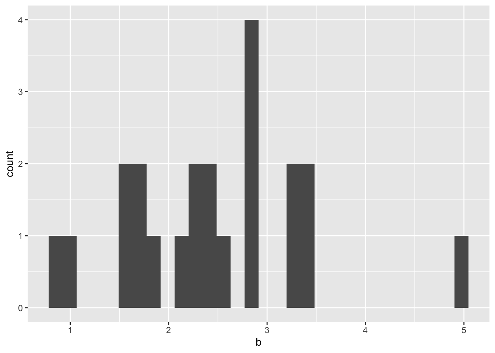
| Version | Author | Date |
|---|---|---|
| da11e69 | haiderinam | 2020-06-30 |
ggplot(hill_coefficients_cum,aes(x=species_curr,y=b))+geom_point()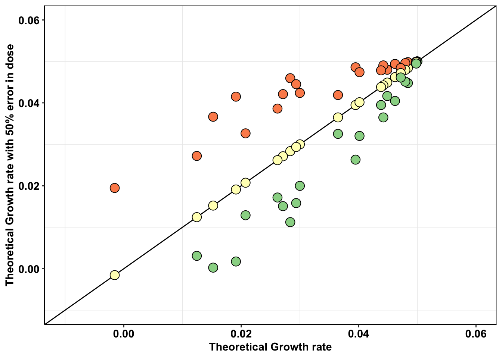
| Version | Author | Date |
|---|---|---|
| da11e69 | haiderinam | 2020-06-30 |
#Maybe we can assume a hill of 2?
###Preparing spreadsheet of hill coefficients for MCMC. 06072020
a=hill_coefficients_cum%>%dplyr::select(mutant=species_curr,hill_coef=b,ic50=e)
rownames(a)=NULL
# write.csv(a,"bcrabl_hill_ic50s.csv")Using the dosing normalization function
####First, we choose our model experiment and calculate the apparent dose at that model experiment using the net growth rate of the standard.
#Apparent dose of E255K (standard) for M3 (model experiment)
# ((1-exp((net_gr_wodrug-0.033481)*time))*-(ic50_standard^hill_standard))^(1/hill_standard)
#We will use this as the apparent dose for our model experiment. Will normalize all other experiments to this dose.
# twinstrand_simple_melt_merge=read.csv("../output/twinstrand_simple_melt_merge.csv",header = T,stringsAsFactors = F,row.names=1)
twinstrand_simple_melt_merge=read.csv("output/twinstrand_simple_melt_merge.csv",header = T,stringsAsFactors = F,row.names=1)
# source("../code/microvariation.normalizer.R")
source("code/microvariation.normalizer.R")
#Focusing on the non-ENU experiments
twinstrand_simple_melt_merge=twinstrand_simple_melt_merge%>%filter(!experiment%in%c("Enu_3","Enu_4"))
net_gr_wodrug=0.055
time=72
hill_standard=2.83 #E255K Hill
ic50_standard=1.205 #E255K IC50
standard_name="E255K"
dose_model=1.9147 #M3 dose
netgr_corrected_compiled=data.frame()
dose_apparent_compiled=data.frame()
for(experiment_current in unique(twinstrand_simple_melt_merge$experiment)){
netgr_raw=twinstrand_simple_melt_merge%>%
filter(experiment==experiment_current,duration=="d3d6")%>%
dplyr::select(experiment,mutant,netgr_obs)
###For one experiment###
netgr_corrected_experiment=microvariation.normalizer(netgr_raw,
net_gr_wodrug,
hill_standard,
ic50_standard,
dose_model,
time,
standard_name)[[1]]
#Dose apparent
dose_apparent_experiment=microvariation.normalizer(netgr_raw,
net_gr_wodrug,
hill_standard,
ic50_standard,
dose_model,
time,
standard_name)[[2]]
netgr_corrected_compiled=rbind(netgr_corrected_experiment,netgr_corrected_compiled) #Of course faster way would be pre-allocating for efficiency
dose_apparent_compiled=rbind(c(experiment_current,dose_apparent_experiment),dose_apparent_compiled)
}
#adding m3's growth rates as the model
netgr_corrected_compiled=merge(netgr_corrected_compiled,netgr_corrected_compiled%>%filter(experiment%in%"M3")%>%dplyr::select(mutant,netgr_model_m3=netgr_obs),by="mutant")
netgr_corrected_compiled=merge(netgr_corrected_compiled,netgr_corrected_compiled%>%filter(experiment%in%"M4")%>%dplyr::select(mutant,netgr_model_m4=netgr_obs),by="mutant")
# #Adding all experiments
# for experiment_curr%in%sort(unique(netgr_corrected_compiled$experiment)){
#
# }
ggplot(netgr_corrected_compiled,aes(x=netgr_model_m3,y=netgr_obs,color=experiment))+geom_point()+geom_abline()Warning: Removed 10 rows containing missing values (geom_point).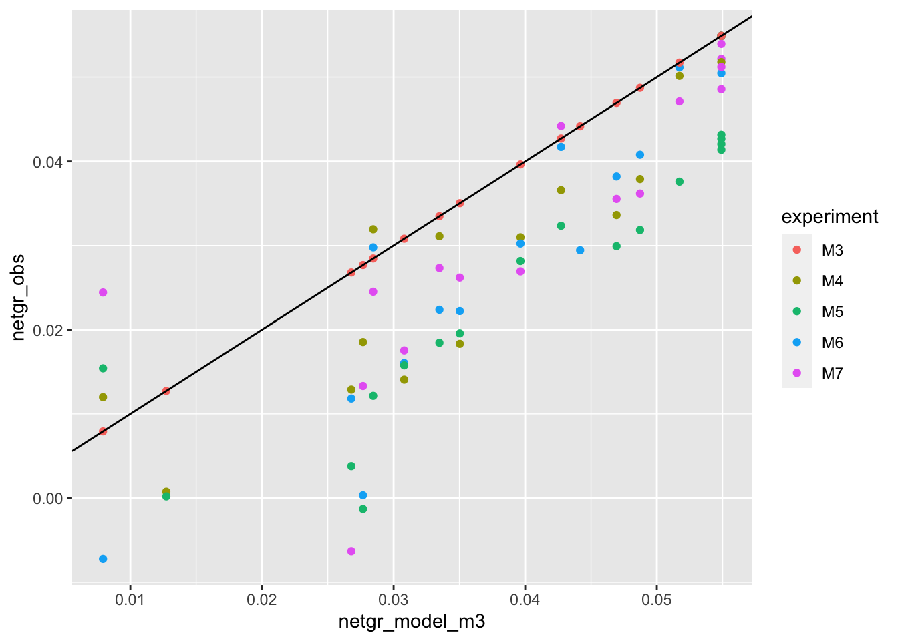
ggplot(netgr_corrected_compiled,aes(x=netgr_model_m3,y=netgr_obs_corrected,color=experiment))+geom_point()+geom_abline()Warning: Removed 10 rows containing missing values (geom_point).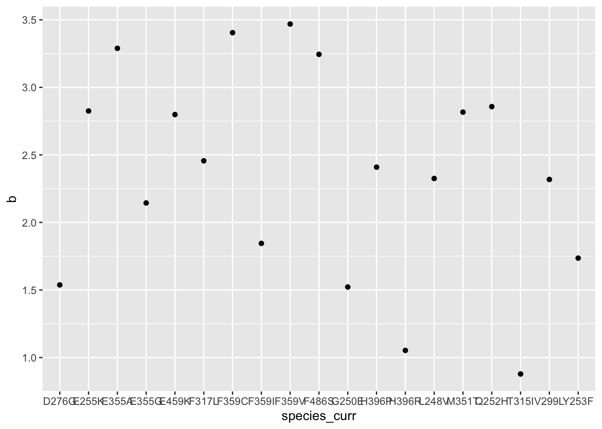
###Looking at whether we can correct by mean growth rate for E255K
# netgr_model=netgr_corrected_compiled%>%group_by(mutant)%>%summarize(netgr_model=mean(netgr_obs,na.rm=T),netgr_model_corrected=mean(netgr_obs_corrected,na.rm=T))
# ggplot(netgr_model,aes(x=netgr_model,y=netgr_model_corrected))+geom_point()+geom_abline()
# a=merge(netgr_corrected_compiled,netgr_model,by="mutant")
# ggplot(a,aes(x=netgr_model,y=netgr_obs_corrected,color=experiment))+geom_point()+geom_abline()
# ggplot(a,aes(x=netgr_model_corrected,y=netgr_obs_corrected,color=experiment))+geom_point()+geom_abline()
#Problem right now: For stuff that has a growth rate higher than netgr_obs, how do you correct it? Because those things apparently have an infinite IC50
####Calculating mean squared error
a=netgr_corrected_compiled%>%filter(!experiment%in%"M3")%>%mutate(sq_error=(netgr_model_m3-netgr_obs_corrected)^2)
mean(a$sq_error,na.rm=T)[1] 5.662937e-05b=netgr_corrected_compiled%>%filter(!experiment%in%"M3")%>%mutate(sq_error=(netgr_model_m3-netgr_obs)^2)
mean(b$sq_error,na.rm=T)[1] 0.0001524178mean(b$sq_error,na.rm=T)/mean(a$sq_error,na.rm=T)[1] 2.691497####Making publication ready plots
netgr_corrected_compiled_forplot=melt(netgr_corrected_compiled,id.vars = c("mutant","experiment","netgr_model_m3","netgr_model_m4"),measure.vars = c("netgr_obs","netgr_obs_corrected"),variable.name = "correction_status",value.name = "netgr_obs")
# write.csv(netgr_corrected_compiled_forplot,"twinstrand_microvariations_normalized.csv",row.names = F)
netgr_corrected_compiled_forplot=netgr_corrected_compiled_forplot%>%
filter(!experiment%in%"M3")%>%
mutate(correction_status_name=
case_when(correction_status=="netgr_obs"~"Raw",
correction_status=="netgr_obs_corrected"~"Corrected"))
netgr_corrected_compiled_forplot$correction_status_name=factor(netgr_corrected_compiled_forplot$correction_status_name,levels=c("Raw","Corrected"))
ggplot(netgr_corrected_compiled_forplot,aes(y=netgr_obs,x=netgr_model_m3))+
geom_abline()+
geom_point()+
facet_wrap(~correction_status_name)+
cleanup+
scale_y_continuous(name="Growth rate of \n model replicate",limits=c(0,0.06))+
scale_x_continuous(name="Growth rate of other replicates",limits=c(0,0.06))+
theme(axis.text.x = element_text(size=11),
axis.text.y = element_text(size=11),
axis.title = element_text(size=11))Warning: Removed 21 rows containing missing values (geom_point).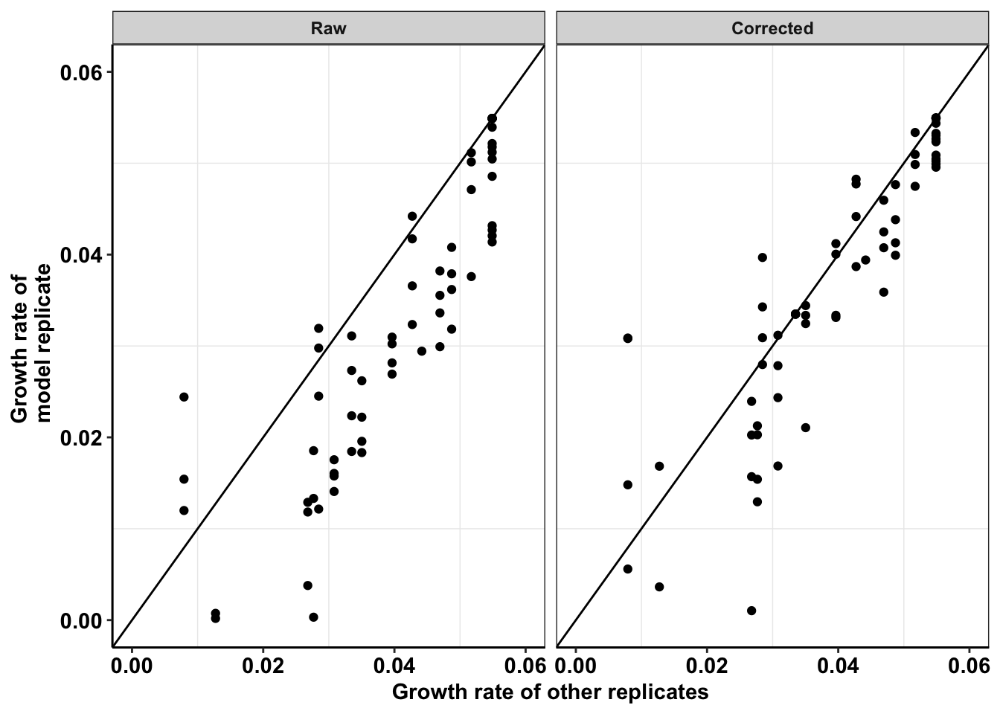
| Version | Author | Date |
|---|---|---|
| da11e69 | haiderinam | 2020-06-30 |
# ggsave("dosing_normalization_simple_e255k.pdf",width=5,height=3,units="in",useDingbats=F)
ggplot(netgr_corrected_compiled_forplot,aes(x=netgr_model_m3,y=netgr_obs,color=correction_status_name))+geom_abline()+geom_point()+facet_wrap(~experiment)+cleanupWarning: Removed 18 rows containing missing values (geom_point).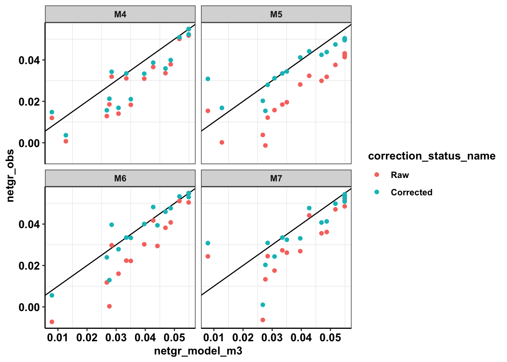
| Version | Author | Date |
|---|---|---|
| da11e69 | haiderinam | 2020-06-30 |
ggplot(netgr_corrected_compiled_forplot%>%filter(experiment%in%c("M3","M5")),aes(x=netgr_model_m3,y=netgr_obs,color=correction_status_name))+geom_abline()+geom_point(color="black",shape=21,size=2,aes(fill=correction_status_name))+cleanup+scale_x_continuous(name="Replicate 1",limits=c(0,.06))+scale_y_continuous(name="Replicate 2",limits=c(0,.06))+scale_fill_manual(values = c("black","gray90"))+theme(legend.position = "none",axis.text = element_blank(),axis.ticks = element_blank())Warning: Removed 5 rows containing missing values (geom_point).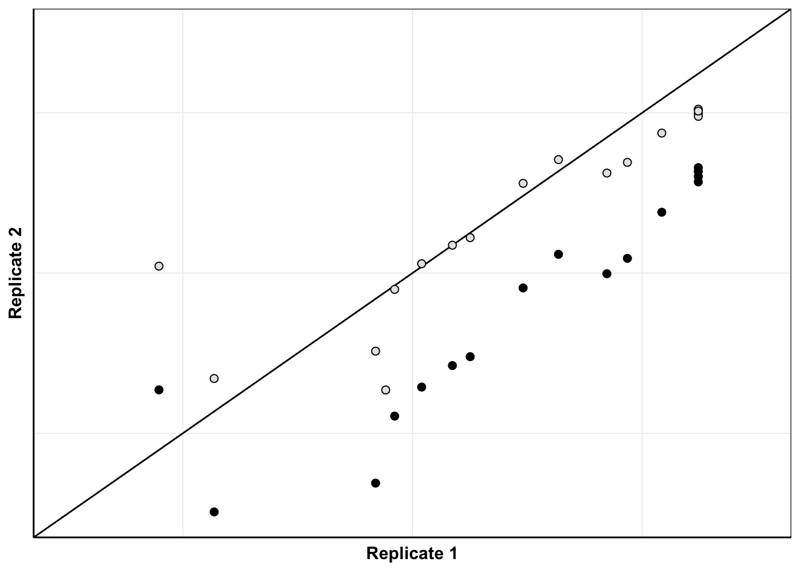
# ggsave("r1r2_1in3000.pdf",width = 2,height=2,units="in",useDingbats=F)
ggplot(netgr_corrected_compiled_forplot%>%filter(experiment%in%c("M3","M7")),aes(x=netgr_model_m3,y=netgr_obs,color=correction_status_name))+geom_abline()+geom_point(color="black",shape=21,size=2,aes(fill=correction_status_name))+cleanup+scale_x_continuous(name="Replicate 1",limits=c(0,.06))+scale_y_continuous(name="Replicate 3",limits=c(0,.06))+scale_fill_manual(values = c("black","gray90"))+theme(legend.position = "none",axis.text = element_blank(),axis.ticks = element_blank())Warning: Removed 7 rows containing missing values (geom_point).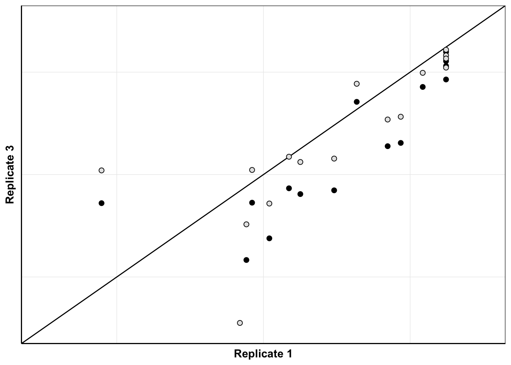
# ggsave("r1r3_1in3000.pdf",width = 2,height=2,units="in",useDingbats=F)
ggplot(netgr_corrected_compiled_forplot%>%filter(experiment%in%c("M3","M6")),aes(x=netgr_model_m3,y=netgr_obs,color=correction_status_name))+geom_abline()+geom_point(color="black",shape=21,size=2,aes(fill=correction_status_name))+cleanup+scale_x_continuous(name="Replicate 1",limits=c(0,.06))+scale_y_continuous(name="Replicate 2",limits=c(0,.06))+scale_fill_manual(values = c("black","gray90"))+theme(legend.position = "none",axis.text = element_blank(),axis.ticks = element_blank())Warning: Removed 5 rows containing missing values (geom_point).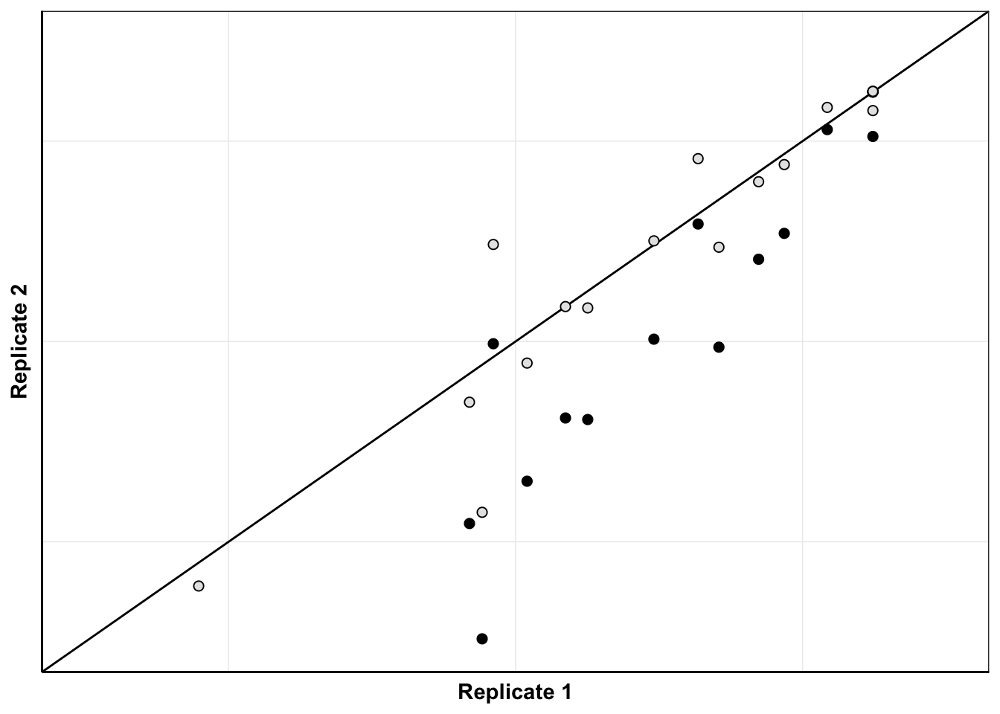
# ggsave("r1r2_1in5000.pdf",width = 2,height=2,units="in",useDingbats=F)
# netgr_corrected_compiled_forplot=netgr_corrected_compiled_forplot%>%dplyr::select(mutant,experiment,correction_status,netgr_obs)###Outputs of MCMC code
mcmc_apparent_doses=data.frame(rbind(c("M3",0.9159),c("M4",1.4261),c("M5",1.4541),c("M6",1.35),c("M7",1.345)))
mcmc_apparent_doses=mcmc_apparent_doses%>%dplyr::select(experiment=X1,dose_app=X2)
# source("../code/microvariation.normalizer.R")
source("code/microvariation.normalizer.R")
#Focusing on the non-ENU experiments
twinstrand_simple_melt_merge=twinstrand_simple_melt_merge%>%filter(!experiment%in%c("Enu_3","Enu_4"))
net_gr_wodrug=0.055
time=72
hill_standard=2.83 #E255K Hill
ic50_standard=1.205 #E255K IC50
standard_name="E255K"
dose_model=0.9159 #M3 dose
netgr_corrected_compiled=data.frame()
dose_apparent_compiled=data.frame()
for(experiment_current in unique(twinstrand_simple_melt_merge$experiment)){
netgr_raw=twinstrand_simple_melt_merge%>%
filter(experiment==experiment_current,duration=="d3d6")%>%
dplyr::select(experiment,mutant,netgr_obs)
###For one experiment###
netgr_corrected_experiment=microvariation.normalizer(netgr_raw,
net_gr_wodrug,
hill_standard,
ic50_standard,
dose_model,
time,
standard_name,
mcmc=TRUE,
dose_app_mcmc=as.numeric(mcmc_apparent_doses%>%filter(experiment%in%experiment_current)%>%dplyr::select(dose_app)))[[1]]
#Dose apparent
dose_apparent_experiment=microvariation.normalizer(netgr_raw,
net_gr_wodrug,
hill_standard,
ic50_standard,
dose_model,
time,
standard_name,
mcmc=TRUE,
dose_app_mcmc=as.numeric(mcmc_apparent_doses%>%filter(experiment%in%experiment_current)%>%dplyr::select(dose_app)))[[2]]
netgr_corrected_compiled=rbind(netgr_corrected_experiment,netgr_corrected_compiled) #Of course faster way would be pre-allocating for efficiency
dose_apparent_compiled=rbind(c(experiment_current,dose_apparent_experiment),dose_apparent_compiled)
}
#adding m3's growth rates as the model
netgr_corrected_compiled=merge(netgr_corrected_compiled,netgr_corrected_compiled%>%filter(experiment%in%"M3")%>%dplyr::select(mutant,netgr_model_m3=netgr_obs),by="mutant")
plotly=ggplot(netgr_corrected_compiled,aes(x=netgr_model_m3,y=netgr_obs,color=experiment))+geom_point()+geom_abline()
ggplotly(plotly)plotly=ggplot(netgr_corrected_compiled,aes(x=netgr_model_m3,y=netgr_obs_corrected,color=experiment))+geom_point()+geom_abline()
ggplotly(plotly)####Calculating mean squared error
a=netgr_corrected_compiled%>%filter(!experiment%in%"M3")%>%mutate(sq_error=(netgr_model_m3-netgr_obs_corrected)^2)
mean(a$sq_error,na.rm=T)[1] 5.197234e-05b=netgr_corrected_compiled%>%filter(!experiment%in%"M3")%>%mutate(sq_error=(netgr_model_m3-netgr_obs)^2)
mean(b$sq_error,na.rm=T)[1] 0.0001524178mean(b$sq_error,na.rm=T)/mean(a$sq_error,na.rm=T)[1] 2.932671####Making publication ready plots
netgr_corrected_compiled_forplot=melt(netgr_corrected_compiled,id.vars = c("mutant","experiment","netgr_model_m3"),measure.vars = c("netgr_obs","netgr_obs_corrected"),variable.name = "correction_status",value.name = "netgr_obs")
netgr_corrected_compiled_forplot=netgr_corrected_compiled_forplot%>%
filter(!experiment%in%"M3")%>%
mutate(correction_status_name=
case_when(correction_status=="netgr_obs"~"Raw",
correction_status=="netgr_obs_corrected"~"Corrected"))
netgr_corrected_compiled_forplot$correction_status_name=factor(netgr_corrected_compiled_forplot$correction_status_name,levels=c("Raw","Corrected"))
ggplot(netgr_corrected_compiled_forplot,aes(y=netgr_obs,x=netgr_model_m3))+
geom_abline()+
geom_point()+
facet_wrap(~correction_status_name)+
cleanup+
scale_y_continuous(name="Growth rate of \n model replicate",limits=c(0,0.06))+
scale_x_continuous(name="Growth rate of other replicates",limits=c(0,0.06))+
theme(axis.text.x = element_text(size=11),
axis.text.y = element_text(size=11),
axis.title = element_text(size=11))Warning: Removed 21 rows containing missing values (geom_point).
| Version | Author | Date |
|---|---|---|
| da11e69 | haiderinam | 2020-06-30 |
# ggsave("dosing_normalization_simple_mcmc.pdf",width=5,height=3,units="in",useDingbats=F)
ggplot(netgr_corrected_compiled_forplot,aes(x=netgr_model_m3,y=netgr_obs,color=correction_status_name))+geom_abline()+geom_point()+facet_wrap(~experiment)+cleanupWarning: Removed 18 rows containing missing values (geom_point).
| Version | Author | Date |
|---|---|---|
| da11e69 | haiderinam | 2020-06-30 |
###Part 4: Correcting ENU replicates #### We will use Method 2 MCMC method: Use the apparent dose of the standard (E255K in this case) to normalize the growth rates of the other mutants to the same apparent dose
rm(list=ls())
cleanup=theme_bw() +
theme(plot.title = element_text(hjust=.5),
panel.grid.major = element_blank(),
panel.grid.major.y = element_blank(),
panel.background = element_blank(),
axis.line = element_line(color = "black"),
axis.text = element_text(face="bold",color="black",size="11"),
text=element_text(size=11,face="bold"),
axis.title=element_text(face="bold",size="11"))
conc_for_predictions=0.8
net_gr_wodrug=.055
# twinstrand_maf_merge=read.csv("../output/twinstrand_maf_merge.csv",header = T,stringsAsFactors = F)
twinstrand_maf_merge=read.csv("output/twinstrand_maf_merge.csv",header = T,stringsAsFactors = F)
# ic50data_long=read.csv("../output/ic50data_all_conc.csv",header = T,stringsAsFactors = F,row.names=1)
ic50data_long=read.csv("output/ic50data_all_conc.csv",header = T,stringsAsFactors = F,row.names=1)
################Remaking Twinstrand Simple Melt Merge################
twinstrand_simple=twinstrand_maf_merge%>%filter(!is.na(mutant),!is.na(experiment))
twinstrand_simple=twinstrand_simple%>%dplyr::select("mutant","experiment","Spike_in_freq","time_point","totalmutant")
###Inferring Enu_4 D0 total mutants to be the same as Enu_3 D0 totals
twinstrand_simple_enu4d0=twinstrand_simple%>%filter(experiment=="Enu_4",time_point=="D0")%>%mutate(experiment="Enu_3")
twinstrand_simple=rbind(twinstrand_simple,twinstrand_simple_enu4d0)
twinstrand_simple_cast=dcast(twinstrand_simple,mutant+experiment+Spike_in_freq~time_point,value.var="totalmutant")
twinstrand_simple_cast$d0d3=log(twinstrand_simple_cast$D3/twinstrand_simple_cast$D0)/72
twinstrand_simple_cast$d3d6=log(twinstrand_simple_cast$D6/twinstrand_simple_cast$D3)/72
twinstrand_simple_cast$d0d6=log(twinstrand_simple_cast$D6/twinstrand_simple_cast$D0)/144
# twinstrand_simple_cast2=twinstrand_simple_cast%>%group_by(mutant)%>%mutate(case_when(D0=experiment=="Enu_3"~D0[experiment=="Enu_4"]))
#Check if ln(final/initial)/time is the correct formula. Also notice how I'm using days not hours
twinstrand_simple_melt=melt(twinstrand_simple_cast[,-c(4:6)],id.vars=c("mutant","experiment","Spike_in_freq"),variable.name = "duration",value.name = "netgr_obs") #!!!!!!!!!!!value name should be drug effect. And drug effect should be drug_effect_obs i think. NO. I think this should be drug_effect_obs. Fixed 4/2/20
twinstrand_simple_melt$drug_effect_obs=net_gr_wodrug-twinstrand_simple_melt$netgr_obs
# twinstrand_simple_melt_merge=merge(twinstrand_simple_melt,ic50data_formerge,"mutant")
twinstrand_simple_melt_merge=merge(twinstrand_simple_melt,ic50data_long%>%filter(conc==conc_for_predictions),all.x = T)
# a=twinstrand_simple_melt%>%filter(experiment%in%"Enu_3")
# a=twinstrand_simple_cast%>%filter(experiment%in%"Enu_3")
# a=twinstrand_maf_merge%>%filter(experiment%in%"Enu_3",time_point=="D3")
#########################
####Plotting replicate 1 vs replicate 2 in two ways.
#1. Use only replicates in which you have sufficient coverage for mutants on D6
#2. Instead of using D3 and D6 counts. Use D0 and D3 counts. Since you didn't have counts for ENU for D3, assume that counts for Enu_3 at D0 would have looked the same as ENU_4 at D0.
#One interesting thing that I noticed is that D0-D3 growth rates for ENU3 and 4 were alike However D3 to D6 growth rates were higher for Enu3 than Enu4. Is it possible you measured Enu3 late? Yes, it does look like you measured Enu3 at 144 hours vs ENU 3 at 133 hours which might be causing the increased apparent growth rate of ENU3
enu_plots=twinstrand_simple_melt_merge%>%filter(experiment%in%c("Enu_4","Enu_3"),duration%in%"d3d6",!netgr_obs%in%NA)
#hardcoding adjustments to the growth rates
enu_plots$netgr_obs[enu_plots$experiment=="Enu_3"]=enu_plots$netgr_obs[enu_plots$experiment=="Enu_3"]
enu_cast=dcast(enu_plots,formula = mutant~experiment,value.var = "netgr_obs")Using the dosing normalization function for ENU Caveat: Now we’re using L248V as a standard, and using d0d3 counts rather than d3d6 counts. Also assuming Enu_4 D0 counts were similar to Enu_3 D0 counts
# # rm(list=ls())
# cleanup=theme_bw() +
# theme(plot.title = element_text(hjust=.5),
# panel.grid.major = element_blank(),
# panel.grid.major.y = element_blank(),
# panel.background = element_blank(),
# axis.line = element_line(color = "black"),
# axis.text = element_text(face="bold",color="black",size="11"),
# text=element_text(size=11,face="bold"),
# axis.title=element_text(face="bold",size="11"))
# twinstrand_simple_melt_merge=read.csv("../output/twinstrand_simple_melt_merge.csv",header = T,stringsAsFactors = F,row.names=1)
twinstrand_simple_melt_merge=read.csv("output/twinstrand_simple_melt_merge.csv",header = T,stringsAsFactors = F,row.names=1)
####First, we choose our model experiment and calculate the apparent dose at that model experiment using the net growth rate of the standard.
#Apparent dose of E255K (standard) for M3 (model experiment)
# ((1-exp((net_gr_wodrug-0.033481)*time))*-(ic50_standard^hill_standard))^(1/hill_standard)
#We will use this as the apparent dose for our model experiment. Will normalize all other experiments to this dose.
# source("../code/microvariation.normalizer.R")
source("code/microvariation.normalizer.R")
#Focusing on the ENU only experiments
twinstrand_simple_melt_merge=twinstrand_simple_melt_merge%>%filter(!experiment%in%c("M3","M4","M5","M6","M7"))
net_gr_wodrug=0.065
time=72
hill_standard=0.789 #E255K Hill
ic50_standard=2.325 #E255K IC50
standard_name="L248V"
dose_model=3.694476 #M3 dose
netgr_corrected_compiled=data.frame()
dose_apparent_compiled=data.frame()
# experiment_current="Enu_3"
for(experiment_current in unique(twinstrand_simple_melt_merge$experiment)){
netgr_raw=twinstrand_simple_melt_merge%>%
filter(experiment==experiment_current,duration=="d0d3")%>%
dplyr::select(experiment,mutant,netgr_obs)
# netgr_raw=twinstrand_simple_melt_merge%>%
# filter(experiment==experiment_current,duration=="d3d6")%>%
# dplyr::select(experiment,mutant,netgr_obs)
###For one experiment###
netgr_corrected_experiment=microvariation.normalizer(netgr_raw,
net_gr_wodrug,
hill_standard,
ic50_standard,
dose_model,
time,
standard_name)[[1]]
#Dose apparent
dose_apparent_experiment=microvariation.normalizer(netgr_raw,
net_gr_wodrug,
hill_standard,
ic50_standard,
dose_model,
time,
standard_name)[[2]]
netgr_corrected_compiled=rbind(netgr_corrected_experiment,netgr_corrected_compiled) #Of course faster way would be pre-allocating for efficiency
dose_apparent_compiled=rbind(c(experiment_current,dose_apparent_experiment),dose_apparent_compiled)
}
#adding m3's growth rates as the model
netgr_corrected_compiled=merge(netgr_corrected_compiled,netgr_corrected_compiled%>%filter(experiment%in%"Enu_4")%>%dplyr::select(mutant,netgr_model_m3=netgr_obs),by="mutant")
ggplot(netgr_corrected_compiled,aes(x=netgr_model_m3,y=netgr_obs,color=experiment))+geom_point()+geom_abline()Warning: Removed 13 rows containing missing values (geom_point).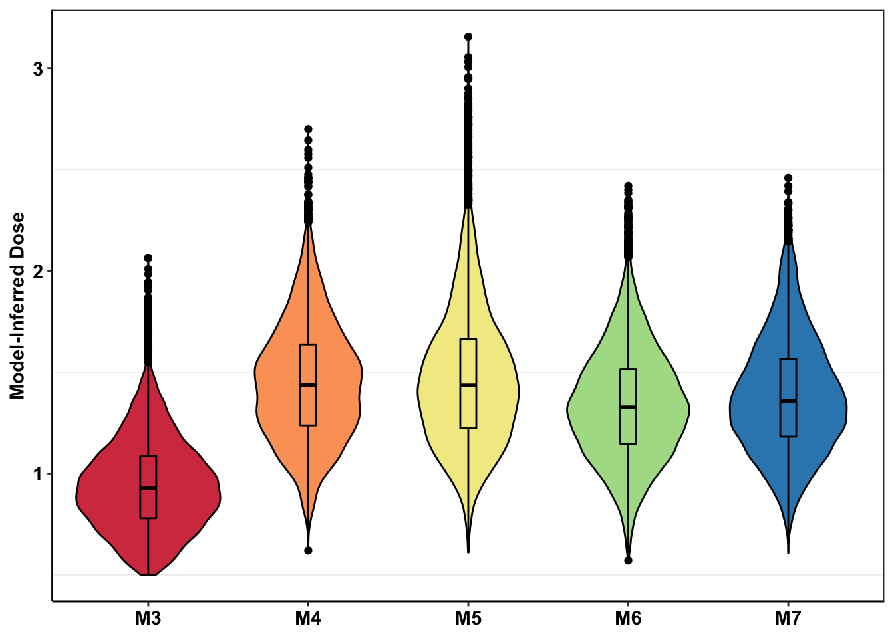
ggplot(netgr_corrected_compiled,aes(x=netgr_model_m3,y=netgr_obs_corrected,color=experiment))+geom_point()+geom_abline()Warning: Removed 13 rows containing missing values (geom_point).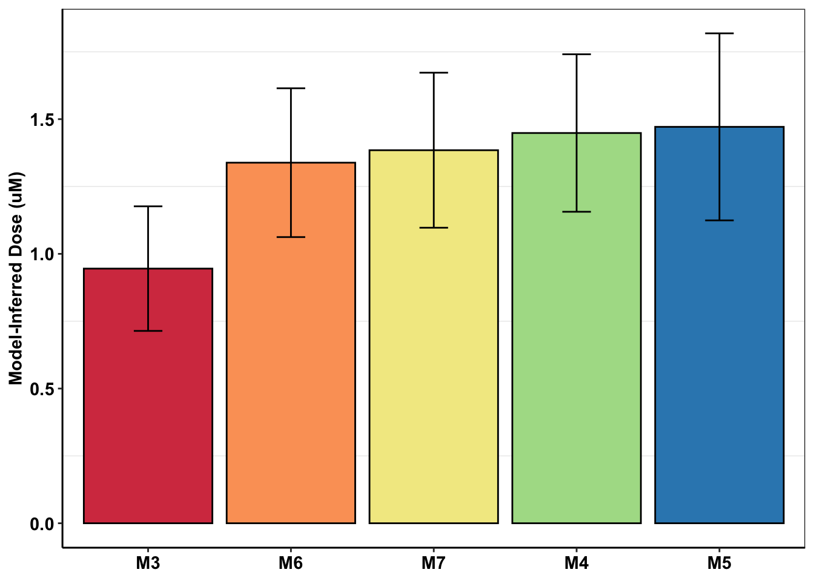
###Looking at whether we can correct by mean growth rate for E255K
# netgr_model=netgr_corrected_compiled%>%group_by(mutant)%>%summarize(netgr_model=mean(netgr_obs,na.rm=T),netgr_model_corrected=mean(netgr_obs_corrected,na.rm=T))
# ggplot(netgr_model,aes(x=netgr_model,y=netgr_model_corrected))+geom_point()+geom_abline()
# a=merge(netgr_corrected_compiled,netgr_model,by="mutant")
# ggplot(a,aes(x=netgr_model,y=netgr_obs_corrected,color=experiment))+geom_point()+geom_abline()
# ggplot(a,aes(x=netgr_model_corrected,y=netgr_obs_corrected,color=experiment))+geom_point()+geom_abline()
#Problem right now: For stuff that has a growth rate higher than netgr_obs, how do you correct it? Because those things apparently have an infinite IC50
####Calculating mean squared error
a=netgr_corrected_compiled%>%filter(!experiment%in%"Enu_4")%>%mutate(sq_error=(netgr_model_m3-netgr_obs_corrected)^2)
mean(a$sq_error,na.rm=T)[1] NaNb=netgr_corrected_compiled%>%filter(!experiment%in%"Enu_4")%>%mutate(sq_error=(netgr_model_m3-netgr_obs)^2)
mean(b$sq_error,na.rm=T)[1] NaNmean(b$sq_error,na.rm=T)/mean(a$sq_error,na.rm=T)[1] NaN####Making publication ready plots
netgr_corrected_compiled_forplot=melt(netgr_corrected_compiled,id.vars = c("mutant","experiment","netgr_model_m3"),measure.vars = c("netgr_obs","netgr_obs_corrected"),variable.name = "correction_status",value.name = "netgr_obs")
netgr_corrected_compiled_forplot=netgr_corrected_compiled_forplot%>%
filter(!experiment%in%"Enu_4")%>%
mutate(correction_status_name=
case_when(correction_status=="netgr_obs"~"Raw",
correction_status=="netgr_obs_corrected"~"Corrected"))
netgr_corrected_compiled_forplot$correction_status_name=factor(netgr_corrected_compiled_forplot$correction_status_name,levels=c("Raw","Corrected"))
ggplot(netgr_corrected_compiled_forplot,aes(y=netgr_obs,x=netgr_model_m3))+
geom_abline()+
geom_point()+
facet_wrap(~correction_status_name)+
cleanup+
scale_y_continuous(name="Growth rate of \n model replicate",limits=c(0,0.068))+
scale_x_continuous(name="Growth rate of other replicates",limits=c(0,0.068))+
theme(axis.text.x = element_text(size=11),
axis.text.y = element_text(size=11),
axis.title = element_text(size=11))Warning: Removed 22 rows containing missing values (geom_point).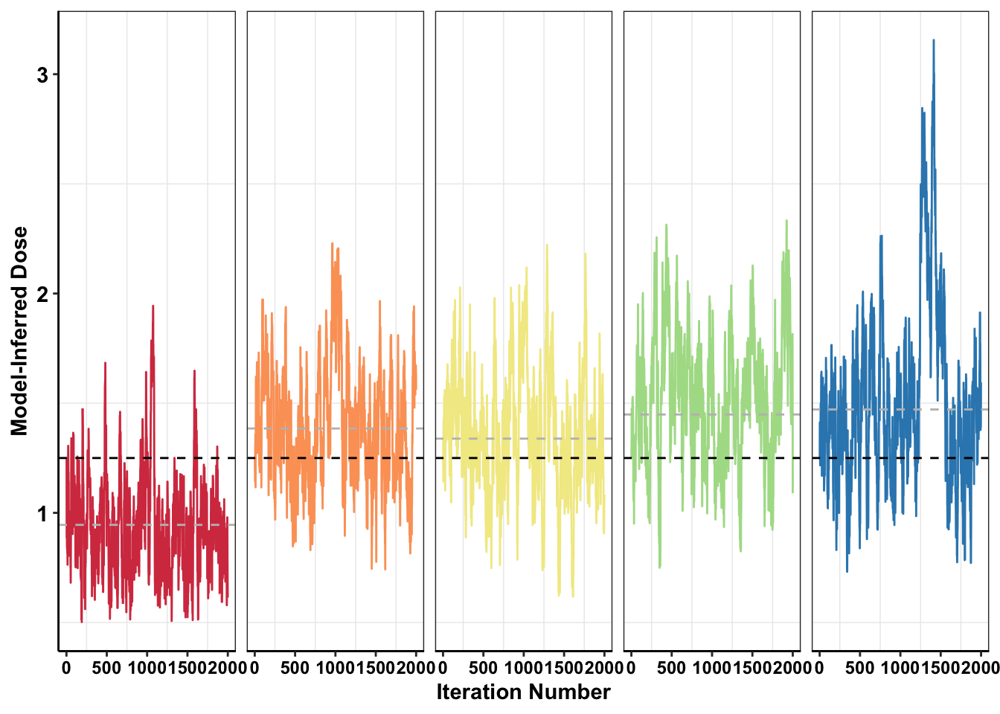
# ggsave("dosing_normalization_simple_e255k.pdf",width=5,height=3,units="in",useDingbats=F)
ggplot(netgr_corrected_compiled_forplot,aes(x=netgr_model_m3,y=netgr_obs,color=correction_status_name))+geom_abline()+geom_point()+facet_wrap(~experiment)+cleanupWarning: Removed 22 rows containing missing values (geom_point).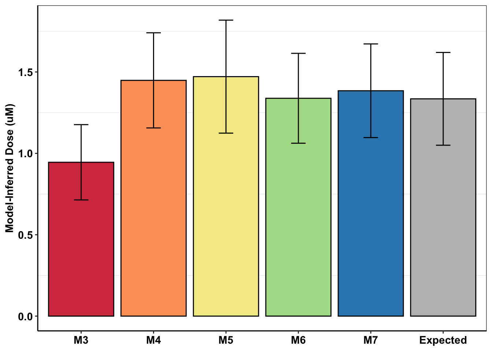
# twinstrand_simple_melt_merge=read.csv("../output/twinstrand_simple_melt_merge.csv",header = T,stringsAsFactors = F,row.names=1)
twinstrand_simple_melt_merge=read.csv("output/twinstrand_simple_melt_merge.csv",header = T,stringsAsFactors = F,row.names=1)
a=twinstrand_simple_melt_merge%>%
filter(experiment%in%c("Enu_4","Enu_3"))%>%
dplyr::select(experiment,duration,mutant,netgr_obs)
a=a%>%filter(!(experiment%in%"Enu_3"&duration%in%c("d0d6","d0d3")))To do: what if you used the actual hill coefficients of the mutants rather than E255K’s hill coefficient (2.83). Would the correlation improve? Would the simulations decrease in quality if you altered the E255K growth rates and tried to make corrections off of those? This is kind of like a negative control for corrections.
sessionInfo()R version 4.0.0 (2020-04-24)
Platform: x86_64-apple-darwin17.0 (64-bit)
Running under: macOS Catalina 10.15.5
Matrix products: default
BLAS: /Library/Frameworks/R.framework/Versions/4.0/Resources/lib/libRblas.dylib
LAPACK: /Library/Frameworks/R.framework/Versions/4.0/Resources/lib/libRlapack.dylib
locale:
[1] en_US.UTF-8/en_US.UTF-8/en_US.UTF-8/C/en_US.UTF-8/en_US.UTF-8
attached base packages:
[1] parallel grid stats graphics grDevices utils datasets
[8] methods base
other attached packages:
[1] deSolve_1.28 boot_1.3-24 lme4_1.1-23
[4] Matrix_1.2-18 fitdistrplus_1.0-14 npsurv_0.4-0.1
[7] lsei_1.2-0.1 survival_3.1-12 lmtest_0.9-37
[10] zoo_1.8-8 drc_3.0-1 MASS_7.3-51.5
[13] BiocManager_1.30.10 plotly_4.9.2.1 ggsignif_0.6.0
[16] devtools_2.3.0 usethis_1.6.1 RColorBrewer_1.1-2
[19] reshape2_1.4.4 ggplot2_3.3.0 doParallel_1.0.15
[22] iterators_1.0.12 foreach_1.5.0 dplyr_0.8.5
[25] VennDiagram_1.6.20 futile.logger_1.4.3 tictoc_1.0
[28] knitr_1.28 workflowr_1.6.2
loaded via a namespace (and not attached):
[1] TH.data_1.0-10 minqa_1.2.4 colorspace_1.4-1
[4] ellipsis_0.3.1 rio_0.5.16 rprojroot_1.3-2
[7] fs_1.4.1 farver_2.0.3 remotes_2.1.1
[10] fansi_0.4.1 mvtnorm_1.1-0 codetools_0.2-16
[13] splines_4.0.0 pkgload_1.0.2 jsonlite_1.6.1
[16] nloptr_1.2.2.1 compiler_4.0.0 httr_1.4.1
[19] backports_1.1.7 assertthat_0.2.1 lazyeval_0.2.2
[22] cli_2.0.2 later_1.0.0 formatR_1.7
[25] htmltools_0.4.0 prettyunits_1.1.1 tools_4.0.0
[28] gtable_0.3.0 glue_1.4.1 Rcpp_1.0.4.6
[31] carData_3.0-3 cellranger_1.1.0 vctrs_0.3.0
[34] nlme_3.1-147 crosstalk_1.1.0.1 xfun_0.13
[37] stringr_1.4.0 ps_1.3.3 openxlsx_4.1.5
[40] testthat_2.3.2 lifecycle_0.2.0 gtools_3.8.2
[43] statmod_1.4.34 scales_1.1.1 hms_0.5.3
[46] promises_1.1.0 sandwich_2.5-1 lambda.r_1.2.4
[49] yaml_2.2.1 curl_4.3 memoise_1.1.0
[52] stringi_1.4.6 desc_1.2.0 plotrix_3.7-8
[55] pkgbuild_1.0.8 zip_2.0.4 rlang_0.4.6
[58] pkgconfig_2.0.3 evaluate_0.14 lattice_0.20-41
[61] purrr_0.3.4 labeling_0.3 htmlwidgets_1.5.1
[64] processx_3.4.2 tidyselect_1.1.0 plyr_1.8.6
[67] magrittr_1.5 R6_2.4.1 multcomp_1.4-13
[70] pillar_1.4.4 haven_2.2.0 whisker_0.4
[73] foreign_0.8-78 withr_2.2.0 abind_1.4-5
[76] tibble_3.0.1 crayon_1.3.4 car_3.0-7
[79] futile.options_1.0.1 rmarkdown_2.1 readxl_1.3.1
[82] data.table_1.12.8 callr_3.4.3 git2r_0.27.1
[85] forcats_0.5.0 digest_0.6.25 tidyr_1.0.3
[88] httpuv_1.5.2 munsell_0.5.0 viridisLite_0.3.0
[91] sessioninfo_1.1.1